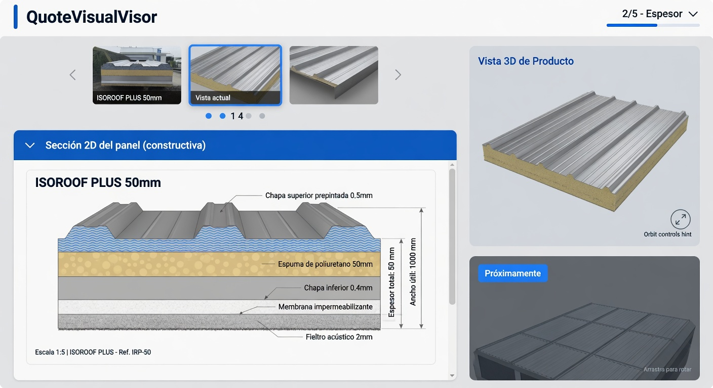
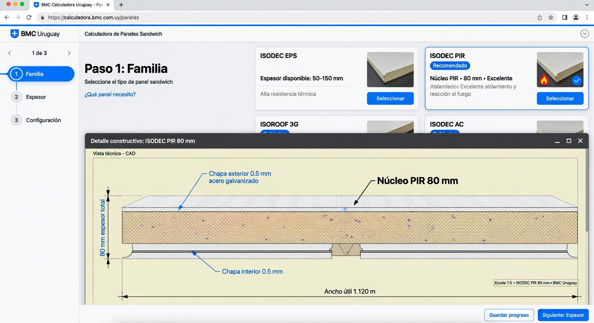
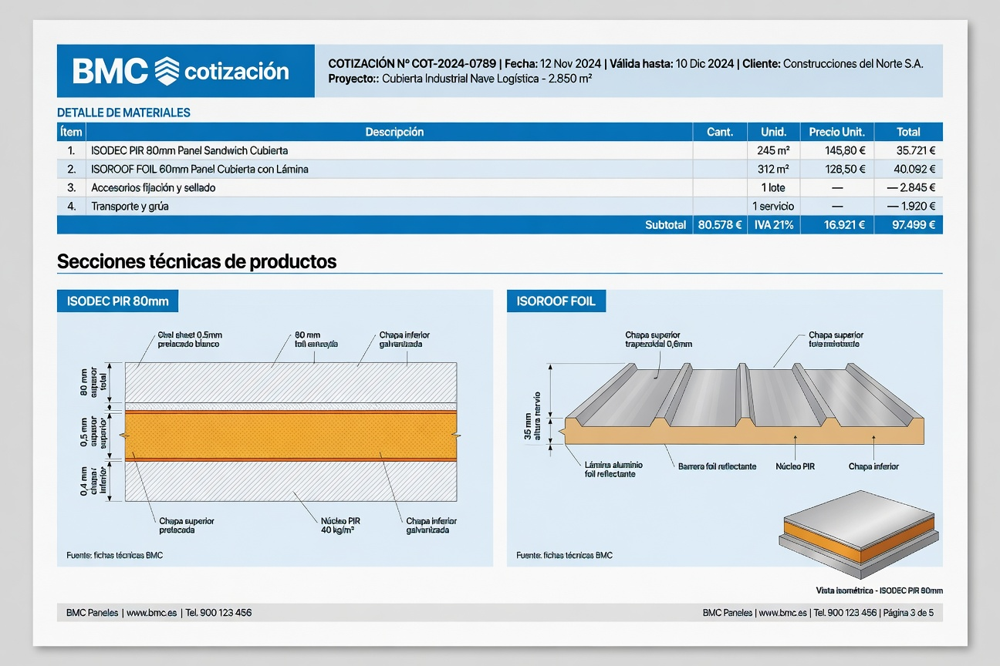
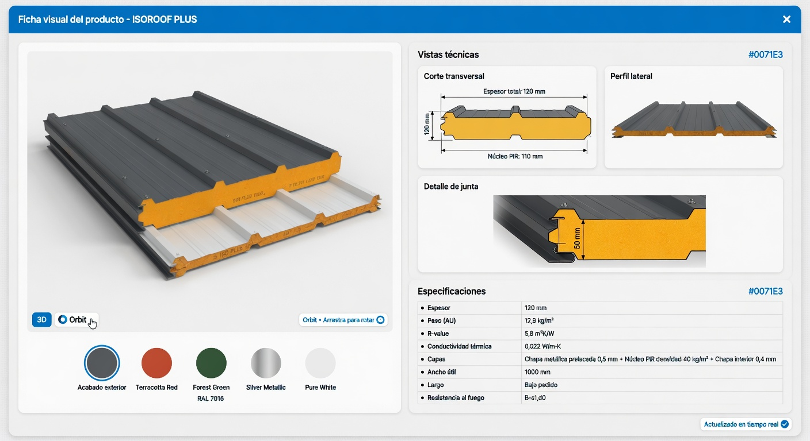
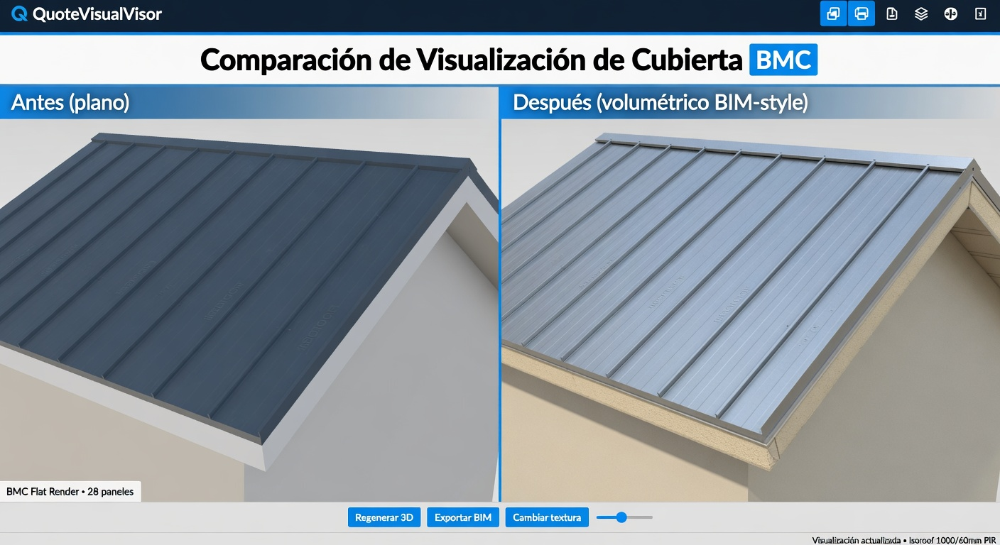

Pre-Run Evaluation | Basado en videos FreeCAD (TechDraw 2D, BIM 3D, Python automation, BIM Library)
Generadas con image_gen para evaluar el input de integración antes de full implementation.
PanelCrossSection.jsx (cortes 2D CAD-style estilo FreeCAD TechDraw) y mejoras 3D volumétricas (BIM-style con espesor real y perfiles).docs/team/visual/previews/ (copia de las generadas en la sesión).
En el visor derecho (durante pasos como dimensiones/espesor). Muestra carrusel + acordeón abierto con el corte técnico CAD (capas, hatching, cotas en mm, perfil para Isoroof). Actualiza live con familia y espesor del wizard. El 3D de ensamble sigue al lado (con posible "Vista 3D Producto" futuro).

Grid de familias (ISODEC, ISOROOF etc.) + debajo el corte constructivo del panel seleccionado (ISODEC PIR ejemplo). Muestra cómo el usuario ve inmediatamente el "qué es" el producto en términos técnicos reales (0.5mm chapa + núcleo + liner).

Página de apéndice o sección de vistas con cortes 2D profesionales para diferentes familias + pequeño render 3D isométrico. Estilo vectorial limpio para impresión. Complementa el "Plano 2D de cubierta" actual.

Vista dedicada: 3D volumétrico realista del panel (espesor visible, perfil nervado, textura catálogo) + múltiples vistas 2D (corte, perfil lateral) + specs table + selector de color que actualiza todo en vivo. Como un mini configurador BIM.

Izquierda: Ensamble actual (planos texturizados sin volumen). Derecha: Propuesto con paneles volumétricos (espesor real visible en bordes, perfiles nervados para Isoroof, laps laterales, iluminación realista). Mismo contexto de visor.